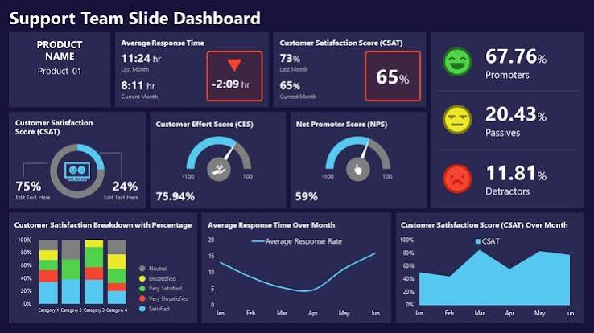

alt="Calculator project">Project Dashboard
A MEL dashboard helps organizations shift from basic "box-checking" compliance to strategic, impact-driven management. Instead of drowning in disconnected spreadsheets and writing retroactive reports after a project has ended, a dashboard turns live field data into visual, actionable insight
View on GitHub